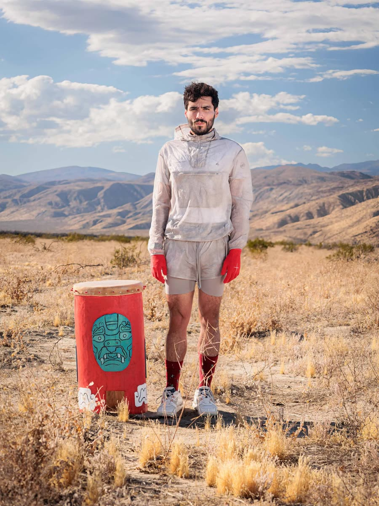

Hello. I’m a composer.
J.E. Hernández (b.1993) is a Mexican-born, San Diego/Houston-based composer, cinematographer, researcher and ethnographer focusing on bridging the gap between inner and outer genealogies through a sonic and multi-disciplinary practice. J.E.’s work has been featured by distinguished ensembles and organizations such as the Tanglewood Music Center, the Kennedy Center for the Arts, the Lincoln Center for the Performing Arts, Opera Theatre of Saint Louis, Houston Grand Opera, American Opera Project, Performing Arts Houston, Apollo Chamber Players, Foundation for Modern Music, Museum of Fine Arts Houston, Contemporary Arts Museum Houston, American Composers Forum, the Brazil National Orchestra, and in a wide variety of films. He holds a degree from the University of Houston. Past teachers include Marcus Maroney, Gregory Spears, and Gabriel Pareyón. He is currently pursuing a PhD in Music Composition at the University of California, San Diego.
Hernández’s artistic practice is centered on fostering dialogue between histories, communities, and artistic disciplines. By integrating multi-axial artistic frameworks with contemporary technologies such as real-time sound processing and wearable movement devices, he seeks to create spaces where Originary and modern knowledge can engage in dialogic performance. His work is about activating memory, sound, and movement as tools for understanding and being in a post-colonial world. His interest in interdisciplinary storytelling extends beyond composition, integrating cinematography, movement, and site-responsive performance as ways to engage with the spaces and people that shape his work.
Recent and upcoming projects include Ilnamikilispan, a chamber work focusing on the transformative aspect of generational historicity and trauma, supported by the MAP Fund; ’Ux Winal, a multi-disciplinary sound installation exploring methodological dialogues between Originary frameworks and modern sound design; and East End Echoes Vol. 1, a sound walk done in collaboration with the city of Houston which documented the sonic profile of Latinx migrants from Houston’s historic East End.
Photo Credit: Carlos Felipe Rosas

PRESS
What I and other people say:
I CARE IF YOU LISTEN
Reflections on “Immigration, Identity, and the Arts”
HOUSTON CHRONICLE
Mexican-born, Houston-based composer premieres piece on immigration experience after being detained for 60 days
I CARE IF YOU LISTEN
J.E. Hernández Uplifts Migrant Laborers through Multidisciplinary Work